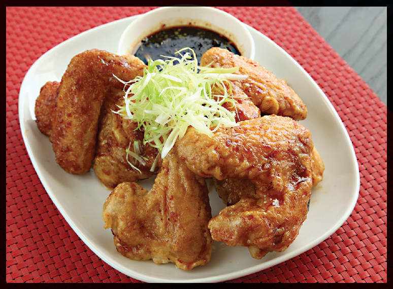
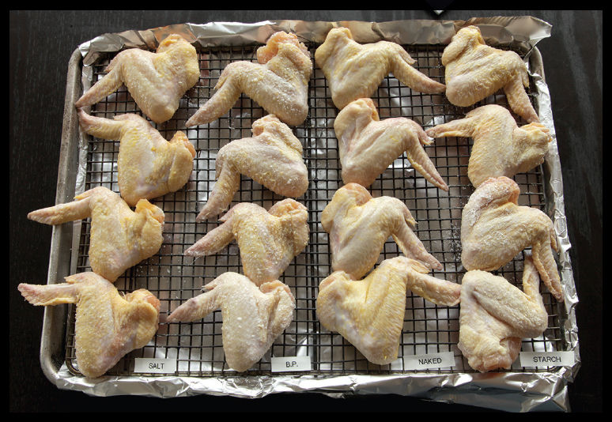
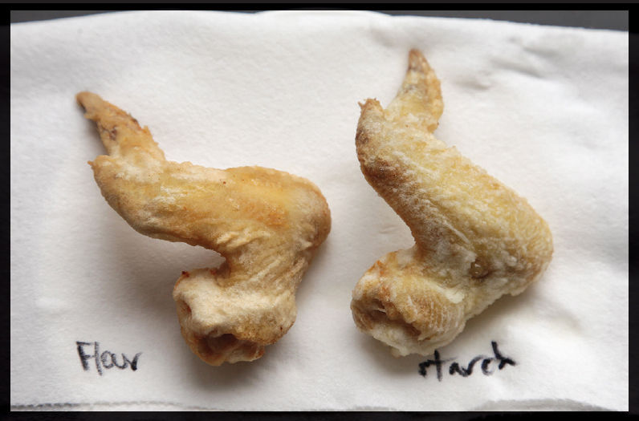
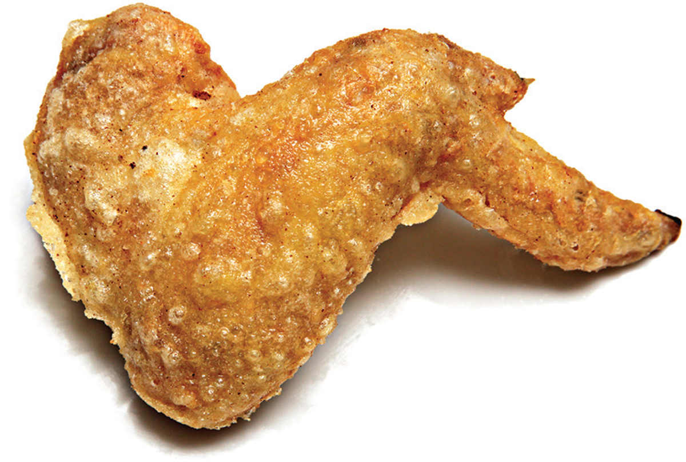

Battered and Dredged
Batters are liquids thickened with flour or starch that are used to give either a puffy coating to fried foods—as with tempura—or an eggshell-like crispy coating—as with Korean fried chicken. Both serve a triple purpose:
•They add texture and crunch to the exterior of the food.
•They insulate the food within from the violent heat of the oil, making for moister, juicier results.
•They provide a surface for sauces and dips to cling.
Dredged foods are similar to battered foods, but rather than adding all of the starch directly to the liquid coating, some or all of it is added as a separate step by tossing liquid-coated foods in a starchy mixture just before frying.
KOREAN FRIED CHICKEN

Years ago, when Adri ran in her first 5k race, the only thing she asked for to celebrate with? Not Champagne, not a night on the town, not even a her-choice no-questions-asked movie night. All she wanted was fried chicken.
The thing is, we don’t eat it that often round these parts. A few times a year, max. So when we do get around to it, it had darned well better be the best fried chicken out there. And when it comes to frying chicken, nobody—and I mean nobody—does it better than Korea. My apologies to all you Southerners.
Korean fried chicken (or KFC as those in the know call it) differs vastly from American-style fried chicken. Rather than the craggy, crusty, significant coating you’d get on a Popeye’s drumstick, you get an eggshell-thin, ultra-crisp crust around a drippingly juicy interior.
The end goal is clear, but getting there required a bit of bushwhacking.
The Batter
For my testing, I used chicken wings, which cook quickly and are easy to find in uniform sizes.

Korean fried chicken typically uses a thin, thin batter that barely coats the wing to get that eggshell-thin crack. My first task was to figure out a way to get that batter to stick. Chicken skin will naturally repel water-based liquids (it had better; otherwise chickens would soak up water like a sponge any time it rained). Try dipping chicken straight out of the package into a batter, and you’ll find that it just runs straight off. Just like a painter rolling on a layer of primer to make sure the paint sticks to the walls, my chicken needed some kind of pretreatment.
I tried a variety of tactics, including air-drying overnight (successful but time consuming), salting to carefully draw out moisture and then drying (works!), coating with a salt and baking powder mixture (also works—the baking powder raises the pH of the surface and increases its surface area by creating tiny bubbles of protein-rich liquid, allowing it to crisp better), and tossing in plain cornstarch to absorb some surface moisture and create a rougher texture for the batter to adhere to.
The best was actually a combination of all four methods: I tossed the chicken wings in a mixture of cornstarch, kosher salt, and baking powder before spreading them out on a rack and letting them air-dry for about an hour (overnight is better, but even as little as 15 minutes will work). Once the coating was in place, I had no trouble getting my batter to stick. But which batter is best?
No. 2: The Starch
The goal of frying is twofold: First, hot oil causes moisture and air inside the batter to evaporate, leaving you with a dried-out crust in place of a wet slurry. Next, protein networks within the batter will harden, making your batter stiff and crisp. While all this is going on, you’re also browning both proteins and carbohydrates, creating new flavorful compounds. So three things.
Among frying’s goals are such diverse elements as drying, hardening, and browning with ruthless efficiency.
Where does the recipe for batter fit into this? Well, working with batter is a balancing act between crispness and structure. See, when you mix flour with water, a sticky gluten network begins to form. Some gluten development is necessary—it provides structure and support. But too much gluten development can lead to tough or leathery crusts.
Take a look at these two wings, one made with a pure water and flour batter, the other made with a cornstarch and water batter. Cornstarch is a pure starch, meaning that its protein content is essentially zero and it produces no gluten when combined with water.

Using 100 percent flour gives you a thing that is leathery and greasy—too much gluten forms, making the coating too robust. On the other hand, 100 percent cornstarch produces a coating that is powdery with relatively little browning (the proteins in flour aid with browning). To get a crust that’s both robust and crisp, you need to use a combination of tactics.* Still, I wanted my wings to be a little bit crunchier, so I pressed on.
The conundrum I was facing was this one: On the one hand, I wanted my batter extra-thin in order to form an eggshell-thin crust around the chicken wing that wasn’t too tough. On the other hand, adding extra water to a flour and starch slurry actually increases the toughness of the fried coating.
Sounds weird, doesn’t it? Shouldn’t a wetter batter lead to a more tender crust? The culprit is, once again, excess gluten. The proteins that link to form gluten actually have an easier time doing it in a thinner batter, where they have the ability to slosh around and bump into each other more than they do in a thicker batter. This is why a relatively dry bread dough requires lots of manual kneading to create a gluten network, while with a thin pancake batter you can overdevelop gluten with just a few too many whisks.
So what was the solution?
Booze Clues
Fans of British chef Heston Blumenthal will recognize vodka as one of the ingredients in his Perfect Fish & Chips recipe. When he presented the idea, initially the thought was that the volatility of the vodka (that is, its propensity to evaporate quickly) would cause it to jump out of the batter faster as it fried, allowing the batter to dehydrate quicker and thus brown faster and crisp up better in the same amount of time. At that task, it serves admirably.
But for my purposes, there’s an even more important factor it brings to the table: limiting gluten development.

Back when I was working at Cook’s Illustrated, I came up with a recipe which we dubbed Foolproof Pie Dough. It relied on the same principle to achieve the same goals: better hydration in dough/batter while simultaneously limiting gluten development. The idea is that since 80-proof vodka is 40 percent alcohol and gluten does not form in alcohol, you can add more vodka to a batter than you would be able to with water, while maintaining the same (or even a diminished) level of gluten formation.
This is precisely what I’m looking for with my fried chicken.
I fried off two batches of chicken wings, one coated with a batter of flour, starch, a touch of baking powder, and water, and the other with some of the water replaced by vodka. Exact same proportions, totally different results: the vodka batter comes out noticeably crisper and lighter, with more of those texture-enhancing, sauce-grabbing microblisters.
Even better: with a vodka-based batter, the useful shelf-life of a premixed batter is drastically extended. You can mix this batter, go catch an episode of Wang Gang on YouTube, walk the dogs, play a round of Dinosaur Escape with the toddler, start on your income tax return, and it’ll still produce thin, perfectly crisp chicken.
As with all fried chicken, allowing it to cool and then frying it briefly a second time will help produce extra-crispy results and a crust that stays shatteringly crisp even after it’s been sitting in a sticky sauce.
This chicken is excellent with either a soy and ginger glaze or a sweet Korean chile glaze (recipes follow), but feel free to use your favorite wing sauce with them.
*Similarly, if you want someone to talk, the comfy chair is not good enough. You must also poke them with the soft cushions.